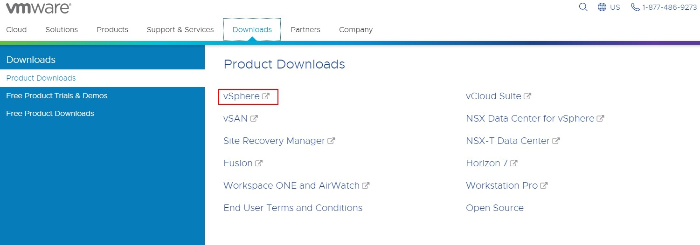
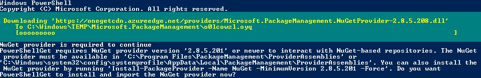
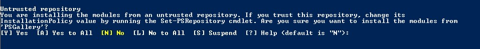
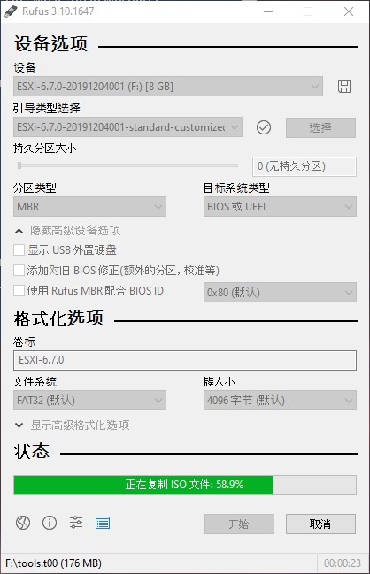

从零开始云番外(1)
ESXI 6.7封装网卡驱动(Windows)1
0. 简介
ESXI提供的镜像中并没有包含非Intel网卡的驱动，所以需要额外进行封装。
虽然 ESXI 7.0已经发布，但是对应的网卡驱动还未更新。
1. 获取VMware vSphere Hypervisor (ESXi) 6.7U3b
-
进入VMware官网
-
点击主页上方的Download，在菜单中选择vSphere

-
选择Select Version切换至 6.7
-
下拉找到 Enterprise Plus - VMware vSphere Hypervisor (ESXi) 6.7U3b，点击后方的Go to Downloads
-
跳转后选择 VMware vSphere Hypervisor (ESXi) Offline Bundle后的Download Now
-
跳转到登录页面后，如果没有账号，点击Sign up now注册或者直接登录账户
-
登录成功后，同意条款即开始下载。
2. 下载其他辅助工具
-
- 打开PowerShell，输入
Install-Module -Name VMware.PowerCLI - 首次安装时，PowerShell界面上提示需要安装NuGet，输入y，最上方会出现进度条，慢慢等待

- 非首次安装，会直接提示，这个一个不受信任的仓库，输入y，最上方会出现进度条，慢慢等待

如果下载耗时较长，可以使用VMware PowerCLI 6.5.4，安装方式参考ESXI6.7网卡驱动封装之离线封装
- 打开PowerShell，输入
-
- 目前支持ESXI 7的版本已经迁移至Github
-
- Windows查看网卡型号
1 2 3 4# 在CMD或者PowerShell中输入systeminfo # Network Card(s): [01] Realtek PCIe GbE Family Controller # [02] ... # [0n]后面跟的就是网卡型号- Linux查看网卡型号
1lspci | grep Ethernet- 在网站对应的驱动，例如1中的
Realtek PCIe GbE Family Controller对应net55-r8168 - 点击对应驱动的链接后，在最下方Direct Download links 下载VIB File 而非Offline Bundle
3. 开始封装
-
将所有下载的镜像，文件都放在同一个文件夹中（例：
D:\img)，将网卡驱动放在更深一层的文件夹中（例：D:\img\driver打开PowerShell1 2 3 4 5 6 7 8 9 10 11 12 13 14 15 16 17 18 19 20 21 22 23 24 25 26 27 28 29 30 31 32 33 34 35 36 37 38 39 40 41 42 43 44# 确认相关文件是否都已放入 d: cd .\img\ ls Directory: D:\img Mode LastWriteTime Length Name ---- ------------- ------ ---- d----- 2020/5/2 11:57 driver -a---- 2020/5/2 11:24 21986 ESXi-Customizer-PS.ps1 -a---- 2020/4/29 11:14 473650008 ESXi670-201912001.zip cd .\driver\ ls Directory: D:\img\driver Mode LastWriteTime Length Name ---- ------------- ------ ---- -a---- 2020/5/2 11:44 1142562 net55-r8168-8.045a-napi.x86_64.vib # 更改执行策略，参考https://docs.microsoft.com/zh-cn/powershell/module/microsoft.powershell.core/about/about_execution_policies?view=powershell-7 Set-ExecutionPolicy -ExecutionPolicy Unrestricted -Scope CurrentUser # 输入y同意更改执行策略 Execution Policy Change The execution policy helps protect you from scripts that you do not trust. Changing the execution policy might expose you to the security risks described in the about_Execution_Policies help topic at https:/go.microsoft.com/fwlink/?LinkID=135170. Do you want to change the execution policy? [Y] Yes [A] Yes to All [N] No [L] No to All [S] Suspend [?] Help (default is "N"): y cd .. # 导入 VMware.PowerCLI Import-Module VMware.PowerCLI # 封装镜像，命令参考 https://www.v-front.de/p/esxi-customizer-ps.html # -izip 表示使用本地镜像 -pkgDir 使用本地驱动文件 .\ESXi-Customizer-PS.ps1 -izip .\ESXi670-201912001.zip -pkgDir .\driver\net55-r8168-8.045a-napi.x86_64.vib -
出现
All done标识封装完成，此时在文件夹中可以找到新生成的镜像。
4. 制作U盘启动盘
-
使用Ubuntu官方推荐的U盘制作工具rufus
-
插入Upan后打开软件，选择镜像文件创建即可。
